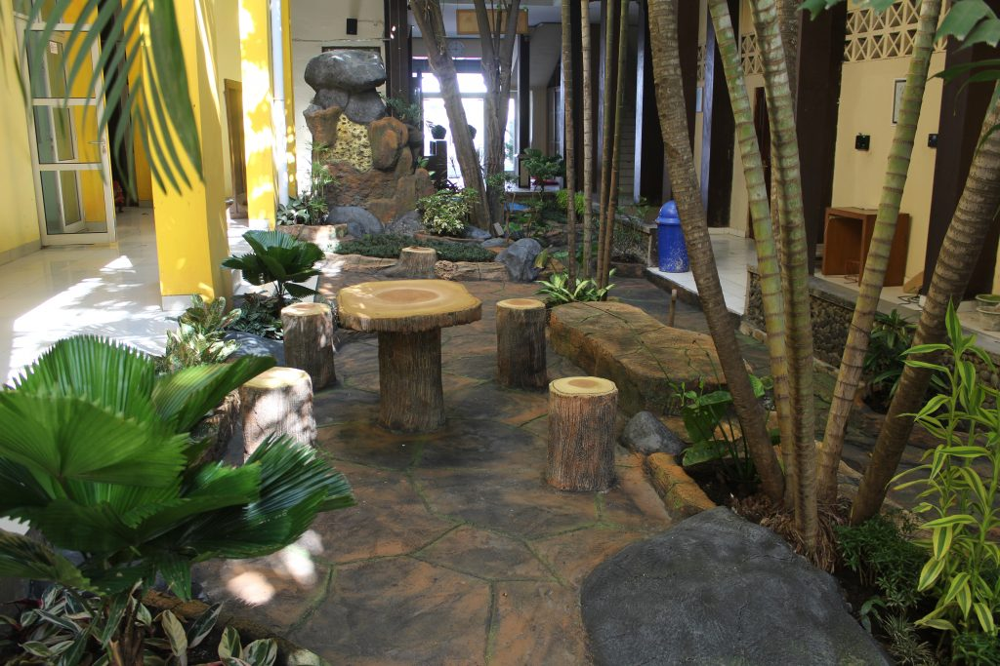

SMK Negeri 8 Semarang merupakan salah satu Sekolah Menengah Kejuruan (SMK) di Indonesia yang sejak tahun pelajaran 1994/1995 telah ditunjuk sebagai SMK yang melaksanakan Pendidikan Sistem Ganda (PSG). PSG adalah suatu bentuk penyelenggaraan pendidikan keahlian profesional yang memadukan secara sistematis dan sinkron antara program pendidikan di sekolah dan program penguasaan keahlian yang diperoleh melalui kegiatan bekerja langsung di dunia kerja, terarah untuk mencapai suatu tingkat keahlian profesional tertentu. Pelaksanaannya melalui Praktek Kerja Industri (Prakerin) yang mulai diberlakukan pada siswa tingkat I semester II sebagai masa orientasi kerja/pengenalan kerja dengan jangkawaktu 1 bulan dan tingkat II semester V selama 2 bulan sebagai masa pelatihan kerja dengan dibantu pembimbing di Dunia Usaha/Dunia Industri (DU/DI), masa kerja dengan bimbingan guru dan DU/DI, dengan persiapan tugas akhir sebagai syarat mengikuti Uji Kompetensi oleh LSP (Lembaga Sertifikasi Profesi).
Saat ini SMK Negeri 8 Semarang mempunyai lima jurusan yaitu Pekerjaan Sosial (PS), Layanan Kesehatan (LK), Pengembang Perangkat Lunak dan Gim (PPLG), Desain Komukasi Visual (DKV) dan Teknik Jaringan Komputer dan Telekomunikasi (TJKT). Pada Penerimaan Peserta Didik (PPD) tahun 2015, SMKN 8 Semerang membukukan catatan baik. Pendaftar mencapai 1.744 orang. Padahal kuota yang disediakan untuk siswa baru hanya 391 kursi.
Siswa SMKN 8 Semarang juga aktif mengikuti berbagai lomba. Catatan menunjukkan, selama bulan Mei 2014 saja, ada tiga trofi bergengsi yang bisa diboyong ke sekolah. Prestasi siswa SMKN 8 Semarang di antaranya :